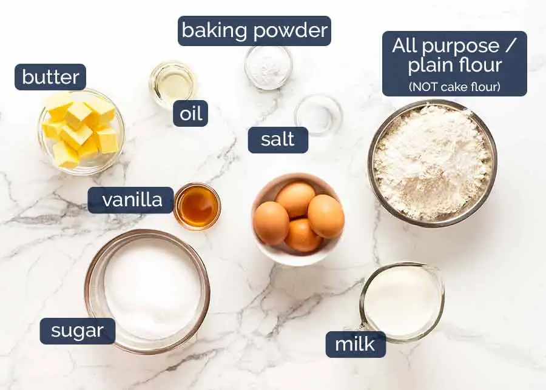

Vanilla Cake

Carbonara is an Italian pasta dish that is based on eggs, cheese, bacon, and black pepper.
Ingredients:
- cooking spray
- 2 ⅔ cups all-purpose flour, or more as needed
- 1 cup white sugar
- 1 tablespoon baking powder
- 1 tablespoon vanilla extract
- 2 pinches salt
- 3 eggs
- ¾ cup milk
- ¾ cup vegetable oil
Step 1
Preheat the oven to 350 degrees F (175 degrees C). Grease a 9-inch cake tin with cooking spray and line with parchment paper.
Step 2
Mix flour, baking powder, and salt
Step 3
Beat butter and sugar until it is flufy anf light
Step 4
Prepare Pans. Spray cooking spray in the pans
Step 5
Add egg one at a time to the butter and sugar mixture
Step 6
Beat in milk and vanilla extract to the mixture
Step 7
Beat in the flour bit by bit with the wet mixture till there is no visible flour
Step 8
Pour batter in pans and tap the pan to smoothen the top of the batter
Step 9